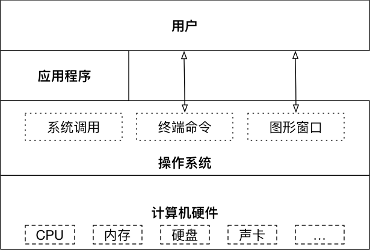
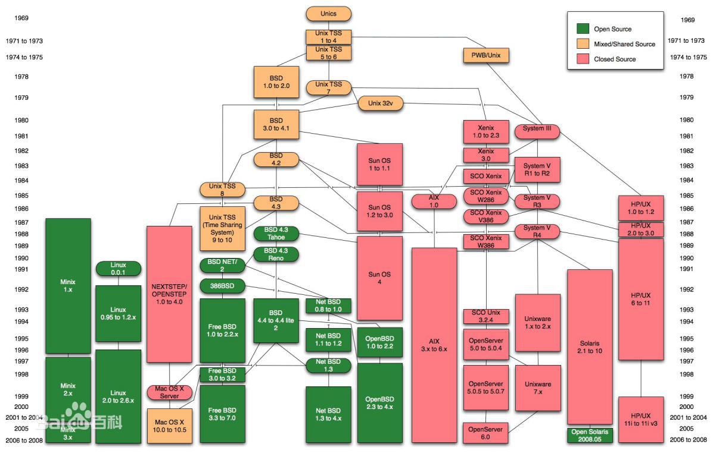

1.1.1 为什么需要操作系统？
对于一个程序而言，它为了保障自己的程序运行流畅，势必就会要求自己分配到的资源越多越好，但是计算机的资源总是有限的，大家都自顾自抢资源的话，要么就是大家一起跑不动，要么就是某几个程序把别的程序的资源都挤占掉。

更麻烦的是，由于程序设计者不可能预测到自己的程序会和什么样的别的程序同时在一个电脑中运行，所以很有可能出现某个程序的临时数据恰好和另一个程序关键数据很相似的情况，于是就会发生这个程序破坏了那个程序数据之类的问题。
更更麻烦的是，我们的电脑硬件也是由不同的厂商制造的，它们的底层硬件系统也各有不同，无论是消费者还是软件出产方肯定都不希望某个软件在这个型号的电脑上能跑，换一个就跑不了的情况。
因此，我们需要操作程序来作为一个协调者——操作系统(Operation System，OS)。
- 一方面，操作系统提供一系列底层接口和上层标准，“抹平”不同电脑之间的硬件差异，这样只要操作系统相同，硬件能达到软件运行的最低标准，理论上这个软件就能互通。
- 此外，操作系统可以为所有程序分配资源，一切程序要调用计算机资源都需要向操作系统申请权限，这样就能最大程度利用计算机资源同时让各种程序不互相冲突。
总体而言，虽然操作系统本身也会占用一部分计算机资源，但是总体上它让计算机运行更为稳定，同时也减少了软件开发者的工作量，因为程序猿只需要考虑操作系统的标准接口，而不需要考虑硬件系统的底层差异。
1.1.2 操作系统地位
操作系统在计算机系统中承上启下的地位：向下封装硬件，向上提供操作接口。

1.1.3 不同应用领域的主流操作系统
1.1.3.1 桌面操作系统
Windows 系列
- 用户群体大
Linux
- 应用软件少
macOS
- 适合于开发人员
1.1.3.2 服务器操作系统
Linux
- 安全、稳定、免费
- 占有率高
Windows Server
- 付费
- 占有率低
1.1.3.3 嵌入式操作系统
1.1.3.4 移动设备操作系统
1.1.4 操作系统的发展史
1.1.4.1 Unix家族
- 1965：贝尔实验室（Bell Labs）加入一项由通用电气和麻省理工学院合作的计划，该计划要建立一套多使用者、多任务、多层次的MULTICS操作系统。后来因为项目太为复杂失败。
- 1969：其主要开发者Thompson（后被称为UNIX之父）和Ritchie领导一组开发者，开发了一个新的多任务操作系统—UNICS，后来被改名为Unix，最初的Unix是用B语言和汇编语言混合编写而成。
- 1971：两人在贝尔实验室共同发明了C语言，并于1973用C语言重写了Unix。
- 1974：UNIX第一次出现在贝尔实验室以外。此后UNIX被政府机关，研究机构，企业和大学注意到，并逐渐流行开来。
- 1980：有两个最主要的Unix的版本线，一个是Berkeley的BSD UNIX，另一个是AT&T的Unix，两者的竞争最终引发了Unix的战争，最终导致Unix出现各种各样的变种。
- 1982：AT&T基于版本7开发了UNIX System Ⅲ的第一个商业版本，并不再开源。
- 1992~2001：由于版权问题，AT&T公司与BSD开发组开始了一场将近10年的版权官司。UNIX由于其昂贵的费用，仅局限于大型机的应用；BSD因为版权问题，失去了宝贵的发展时期。

1.1.4.2 Linux家族
- Minix（mini-UNIX）最初是由Andrew Tanenbaum教授，仿照4.3BSD的源代码，白手起家完成了12000行C语言的编写工作这个系统只是一个教学工具，没有什么实际应用价值。
- 1990年，Linus Torvalds决定编写一个自己的Minix内核，初名为Linus' Minix，意为Linus的Minix内核，后来改名为Linux，此内核于1991年正式发布，并逐渐引起人们的注意。
- Linux操作系统的诞生、发展、和成长过程依赖于五个重要支柱：unix操作系统、minix操作系统、GNU计划、POSIX标准和互联网。
- GNU计划：GNU是“GNU is Not Unix”的递归缩写，由Richard M.Stallman于1984年创办,旨在开发一个免费、类unix的操作系统-GNU系统及其开发工具；Emacs编辑系统、BASH shell程序、GCC、GDB等开发工具都是GNU组织的产品。
- 1992年Linux与其他GNU软件结合，完全自由的操作系统正式诞生。该操作系统往往被称为“GNU/Linux”或简称Linux。
- POSIX标准：POSIX标准定义了操作系统应该为应用程序提供的接口标准，POSIX标准用来统一Unix、Linux各分支编程接口，以提高其通用型和可移植性。